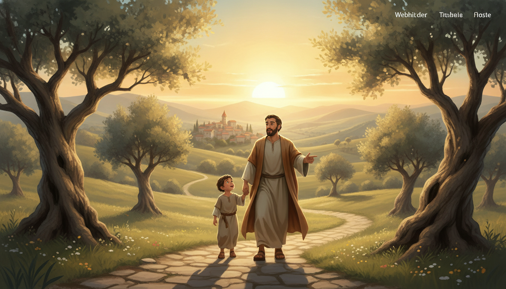

申6:1-9：示馬的呼召：全心的愛與信仰的傳承
「以色列啊，你要聽！耶和華－我們神是獨一的主。你要盡心、盡性、盡力愛耶和華－你的神。」
🙏 禱告
親愛的天父，我們感謝祢，因祢先愛了我們，將祢的律法與心意賜給我們。求聖靈開啟我們的耳，讓我們真實聽見「示馬」的呼召；開啟我們的心，使我們能盡心、盡性、盡力地愛祢。主啊，求祢幫助我們不單將祢的話語銘刻在心，更能在每日生活中活出這份信仰，並殷勤地傳承給我們的下一代，讓祢的真理在我們的家庭與世代中永遠發光。奉主耶穌基督的聖名祈求，阿們。
歷史、人文、政治環境
摩西在摩押平原面對新一代以色列人。第一代因不信倒斃，新生代需與神立約。這是在進入迦南多神崇拜文化前，最核心的屬靈預備，將律法提煉為生活核心。
猶太文學結構分析
此段屬第二篇講論總綱：前言與應許(1-3)，宣告與要求(4-5)，生活實踐與傳承(6-9)。結構嚴謹，從抽象的愛轉化為具體的生活刻印。
📋 分段大綱與解析
1. 聆聽與順服：蒙福的根基
「以色列啊，你要聽，要謹守遵行...」
關鍵：「敬畏(Yare)」指深深的敬重。順服非交易，而是行在生命的說明書中。
📜 講道文稿
示馬的呼召：全心的愛與信仰的傳承
各位弟兄姊妹，今天我們要進入申命記第六章。摩西呼喊「示馬」，這不僅是猶太人的禱文，更是主耶穌親自印證的「最大誡命」。
「聆聽與順服」
順服神是交易嗎？絕不是！這如同火車行駛在鐵軌上才有自由。神的律法是保護，是生命的安全軌道。
💬 名言佳句
- • 提摩太·凱勒：「福音是這樣的：我們真實的本相，比我們所敢於承認的更加敗壞...」
- • 司布真：「一本翻得破爛不堪的聖經，通常屬於一個生命不殘破的人。」
網路資料可能出錯，請小心查證、謹慎使用。